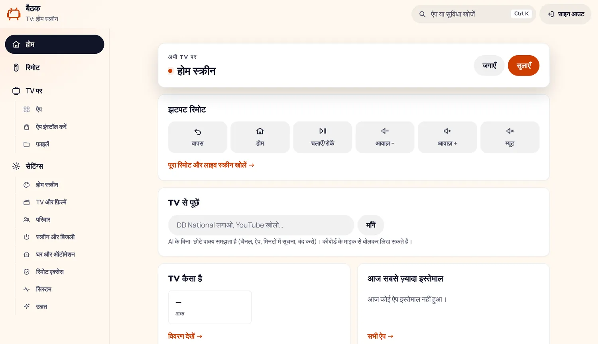
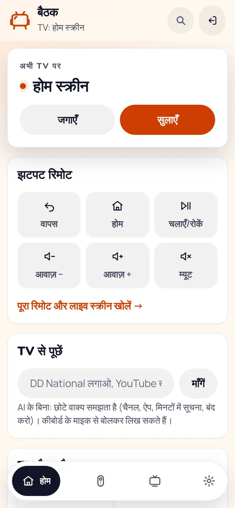
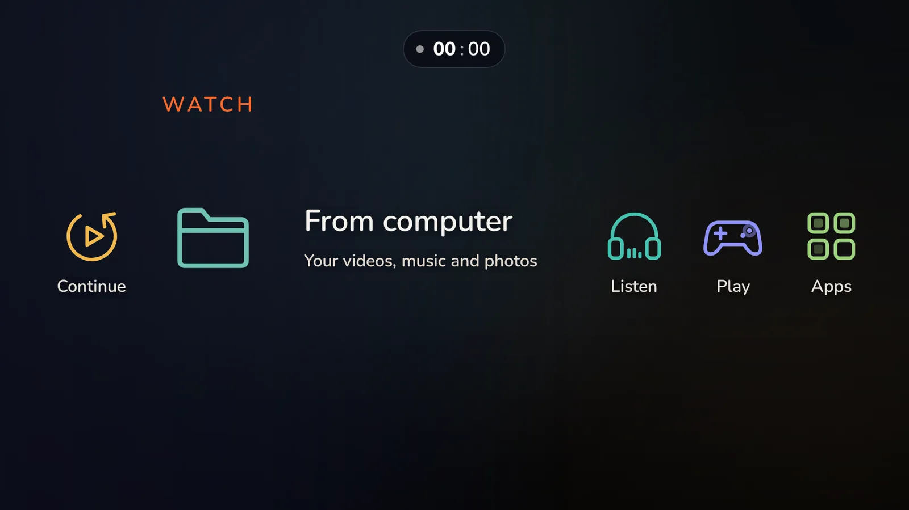

आपका टीवी, फिर से आसान। हर चीज़ अपनी जगह, जैसे सजा हुआ ड्रॉइंग रूम।
उनके लिए बनी जो बस सोफ़े पर लेटकर टीवी देखना चाहते हैं। Sofaly होम स्क्रीन बदलता है, आपका टीवी नहीं: Google वहीं रहता है, कोई विज्ञापन नहीं, और हर चीज़ एक ही जगह।
एक क्रॉस, पाँच दुनिया
जारी रखें, देखें, सुनें, खेलें और ऐप्स। किसी भी चीज़ तक दो क्लिक।
बिल्कुल विज्ञापन नहीं
मुफ़्त प्लान में भी, एक भी प्रायोजित जगह नहीं। आपके घर से कोई ट्रैकिंग बाहर नहीं जाती।
साधारण टीवी पर भी तेज़
32-बिट Chromecast पर मापा गया: एनिमेशन डिवाइस की क्षमता के हिसाब से बदलता है।
पूरे घर के लिए बना
दादा-दादी के लिए भी
बड़े अक्षर, ऐप का नाम बोलने वाला सरल मोड, हाई कंट्रास्ट और स्क्रीन रीडर। 15 भाषाओं में।
आपके साथ जागता है
अलार्म खुद टीवी चालू करता है, धीरे-धीरे आवाज़ बढ़ाता है और सुप्रभात खोलता है: समय, मौसम और दिन की योजना।
घर का ध्यान रखता है
Home Assistant की लाइटें, सीन और डोरबेल टीवी पर। सबके जाने पर सो जाता है।
आपके फ़ोन से बात करता है
घर के किसी भी फ़ोन या कंप्यूटर से कंट्रोल करें, टाइप करें और संदेश भेजें, PIN से सुरक्षित।
सही मौसम
मौजूदा मौसम सबसे नज़दीकी हवाई अड्डे से आता है: मापा हुआ, अंदाज़ा नहीं। एक OK से 9 दिन का पूर्वानुमान।
अपना ख़याल खुद रखता है
हर रात लॉक किया बैकअप, आपके सोते समय रखरखाव, और गड़बड़ी समझाने वाला जाँच।
टीवी अब आपके फ़ोन और कंप्यूटर पर भी।
उसी नेटवर्क पर ब्राउज़र खोलें, PIN डालें और हो गया: रिमोट, टाइपिंग, टीवी की स्क्रीन लाइव, नोट्स और सेटिंग्स। कुछ इंस्टॉल नहीं, कोई अकाउंट नहीं।


- फ़ोन और कंप्यूटर पर पैनलरिमोट, हिंदी में टाइपिंग, टीवी स्क्रीन लाइव, स्क्रीनसेवर फ़ोटो, बोर्ड और बैकअप, घर के किसी भी डिवाइस के ब्राउज़र से।
- टीवी से कहें“YouTube खोलो”, “7 मिनट में याद दिलाओ”, “30 मिनट में बंद हो जाओ” लिखें या बोलें और टीवी कर देता है।
- फ़ोन से शेयर करेंऐप की तरह इंस्टॉल करने पर पैनल शेयर में दिखता है: YouTube वीडियो और लिंक टीवी पर खुलते हैं और टेक्स्ट संदेश बन जाता है।
- Windows पर शॉर्टकटटीवी Explorer के Network में पैनल खोलने वाले शॉर्टकट के साथ दिखता है, भले ही उसका IP बदल जाए।
- टीवी नेटवर्क ड्राइव के रूप मेंफ़ाइलें खींचकर टीवी पर कॉपी करें: Windows में यह फ़ोन की तरह This PC में दिखता है; Mac, Linux और फ़ोन पर सुरक्षित WebDAV से।
- कई घरअपने घर और माता-पिता के घर का टीवी एक ही फ़ोन से संभालें।
पैनल की असली स्क्रीनें, उदाहरण डेटा के साथ।
122 नई चीज़ें जो आपका टीवी करने लगता है। 12 दुनियाओं में सजाई गईं, जैसे क्रॉस स्क्रीन को सजाता है।
- क्रॉसएक साफ़ स्क्रीन जिसे हर कोई समझे, आपकी पसंद के अनुसार सजी।19
- देखेंआपकी फ़िल्में, सीरीज़ और होम थिएटर जैसा प्लेयर।14
- सुनेंरेडियो और पॉडकास्ट, वीडियो जितनी ही देखभाल के साथ।5
- खेलेंआपके सारे गेम एक जगह, कंट्रोलर के लिए तैयार।6
- ऐप्सआपके ऐप्स, समझदार क्रम में।3
- घरअलार्म, टाइमर, ऑटोमेशन और स्मार्ट होम।13
- मौसम और स्क्रीनसेवरसही मौसम और ऐसा स्क्रीनसेवर जिसे चालू रखने का मन करे।15
- परिवारहर किसी की प्रोफ़ाइल, बच्चों की देखभाल और मेहमानों का स्वागत।12
- फ़ोन और कंप्यूटरटीवी घर के डिवाइस से बात करता है।11
- अपना ख़याल खुद रखता हैबैकअप, रखरखाव और जाँच, बिना आपको याद रखे।13
- सबके लिएउनके लिए जो अलग तरह से देखते, सुनते या रिमोट चलाते हैं।5
- निजतान विज्ञापन, न ट्रैकिंग, और ज़रूरत की जगह PIN।6
क्रॉस
एक साफ़ स्क्रीन जिसे हर कोई समझे, आपकी पसंद के अनुसार सजी।

क्रॉस
जारी रखें, देखें, सुनें, खेलें और ऐप्स एक पंक्ति में। चुनी गई दुनिया बड़ी हो जाती है, और उसकी सामग्री ठीक नीचे।
जारी रखें
जो कर रहे थे वहाँ लौटने की एक जगह: एपिसोड, स्टेशन, पॉडकास्ट या आख़िरी ऐप।
ऊपरी बार
खोज, आवाज़, एक लाइन में मौसम और घड़ी, हमेशा एक ही जगह। ब्राउज़ करते समय यह सिमट जाती है ताकि स्क्रीन खुली रहे।
क्रॉस
जारी रखें, देखें, सुनें, खेलें और ऐप्स एक पंक्ति में। चुनी गई दुनिया बड़ी हो जाती है, और उसकी सामग्री ठीक नीचे।
कहाँ: ◀ ▶ दुनिया बदलते हैं, ▲ ▼ कॉलम में चलते हैं, OK खोलता है।जारी रखें
जो कर रहे थे वहाँ लौटने की एक जगह: एपिसोड, स्टेशन, पॉडकास्ट या आख़िरी ऐप।
कहाँ: यह क्रॉस का पहला आइटम है।ऊपरी बार
खोज, आवाज़, एक लाइन में मौसम और घड़ी, हमेशा एक ही जगह। ब्राउज़ करते समय यह सिमट जाती है ताकि स्क्रीन खुली रहे।
कहाँ: ▲ से उस तक जाएँ।Google चलता रहता है
Google Assistant, Gemini, खोज और आपका Google खाता पहले की तरह चलते हैं। Sofaly होम स्क्रीन बदलती है, आपका TV नहीं।
कहाँ: माइक्रोफ़ोन बटन हमेशा की तरह इस्तेमाल करें।त्वरित पैनल
Wi-Fi, Bluetooth, स्लीप टाइमर, साउंड आउटपुट, अलार्म, प्रोफ़ाइल, सूचनाएँ और खरीदारी की सूची, किसी भी ऐप से।
कहाँ: BACK दबाकर रखें।आपका रिमोट, आपके नियम
HOME हमेशा Sofaly पर लौटाता है। BACK दबाकर रखने से त्वरित पैनल, HOME दबाकर रखने से घर, और किसी ऐप पर OK दबाकर रखने से उसका मेन्यू खुलता है।
कहाँ: की टेस्टर टीवी को मिलने वाला हर बटन दिखाता है।अभी चल रहा है
ऊपर एक पिल जिसमें चल रही चीज़ का कवर और शीर्षक है। OK रोकता या चलाता है, OK दबाकर रखने से ऐप खुलता है।
कहाँ: होम स्क्रीन › और विकल्प में चालू करें।थीम और बैकग्राउंड
डार्क, फ़ोकस में चीज़ की कला के साथ। गैलरी, हर दिन The Met की एक पेंटिंग के साथ। आसमान, सैटेलाइट और नक्शे के साथ। या अपना बैकग्राउंड, फ़ोटो या वीडियो। प्लगइन के बैकग्राउंड भी चलते हैं, जैसे Overflight के हवाई दृश्य।
कहाँ: डार्क, गैलरी और आसमान Basic में; बाकी Pro में।आपकी पसंद के आइकनPro
Play से आइकन पैक इस्तेमाल करें या एक-एक ऐप का आइकन बदलें।
कहाँ: ऐप पर OK दबाकर रखें › आइकन बदलें।TV के हिसाब से एनिमेशन
ताक़तवर TV सब कुछ एनिमेट करता है; साधारण TV सिर्फ़ चुनी हुई चीज़ें, और फ़्रेम गिरने पर ख़ुद कम कर देता है।
कहाँ: सेटिंग्स › दिखावट।चाँद की कलाPro
आज रात का चाँद और उसका कितना हिस्सा रोशन है, बिना इंटरनेट के टीवी खुद गिनता है।
कहाँ: पूर्वानुमान, स्क्रीनसेवर और रात में मौसम आइकन पर। सेटिंग्स › दिखावट।उलटी गिनतीPro
आपकी चुनी तारीख या अगली छुट्टी में कितने दिन बाकी हैं।
कहाँ: स्क्रीन के ऊपर वाली पिल में। सेटिंग्स › दिखावट।घर का रिमाइंडरPro
आपके चुने दिनों पर लौटने वाला नोट: रीसाइक्लिंग का दिन, दवा, क्लास।
कहाँ: स्क्रीन के ऊपर वाली पिल में। सेटिंग्स › दिखावट।आपकी सेवा की स्थितिPro
टीवी आपका दिया पता जाँचता है और बताता है कि वह चालू है या नहीं: घर का सर्वर, दुकान की वेबसाइट।
कहाँ: स्क्रीन के ऊपर वाली पिल में। सेटिंग्स › दिखावट।आज के भावPro
मुद्राएँ, बिटकॉइन और ईथर आज के मूल्य पर, खुले आधिकारिक स्रोतों से।
कहाँ: ऊपरी बार में मौसम के बगल में। सेटिंग्स › दिखावट।आपकी टीम का अगला मैचPro
आपकी टीम अगली बार कब और किससे खेलेगी, होम स्क्रीन के एक कार्ड पर।
कहाँ: क्रॉस के टीवी आइटम में। सेटिंग्स › दिखावट।दूसरे ऐप्स के कार्डPro
Sofaly के अपने कार्डों के अलावा पार्टनर ऐप्स भी होम स्क्रीन पर अपना कार्ड लगाते हैं: डिलीवरी, बस, सोसाइटी की सूचना।
कहाँ: कार्ड देखें के अंत में दिखते हैं।स्क्रीन के ऊपर द्वीप
सूचनाएँ ऊपर एक पिल में बारी-बारी आती हैं: इंटरनेट नहीं, रिमाइंडर, कैलेंडर और अलार्म। ज़रूरी चीज़ 5 सेकंड के लिए “▲ खोलने के लिए” के साथ बड़ी होती है, घर की डोरबेल तुरंत दिखती है और टीवी चालू करने पर जो हुआ उसका सार आता है। सेंटर खोलने के लिए क्रॉस के ऊपर ▲ दबाए रखें।
कहाँ: होम स्क्रीन, ऊपर।सही समय पर सही सुझाव
बिना आर्टिफ़िशियल इंटेलिजेंस: हफ़्ते भर के इस्तेमाल से टीवी उस समय के हिसाब से सुझाव देता है।
कहाँ: होम स्क्रीन।
देखें
आपकी फ़िल्में, सीरीज़ और होम थिएटर जैसा प्लेयर।

कंप्यूटर से
Plex, Jellyfin, Emby, पीसी या NAS फ़ोल्डर (SMB, WebDAV, FTP, SFTP, NFS), OneDrive, Dropbox, Box, Google Drive, UPnP और USB ड्राइव से वीडियो, संगीत और फ़ोटो।
हर चीज़ चलाने वाला प्लेयर
Dolby (AC3, E-AC3), DTS और TrueHD साउंड, और Blu-ray, DVD व एनीमे सबटाइटल, Kodi या VLC इंस्टॉल किए बिना।
वहीं से जारी
फ़िल्में और एपिसोड सही जगह से लौटते हैं। अगला एपिसोड 10 सेकंड बाद शुरू होता है, और लगातार 3 के बाद टीवी पूछता है कि क्या आप अब भी देख रहे हैं।
कंप्यूटर से
Plex, Jellyfin, Emby, पीसी या NAS फ़ोल्डर (SMB, WebDAV, FTP, SFTP, NFS), OneDrive, Dropbox, Box, Google Drive, UPnP और USB ड्राइव से वीडियो, संगीत और फ़ोटो।
कहाँ: चालू सर्वर और USB ड्राइव खुद दिखते हैं; बाकी जोड़ें में।हर चीज़ चलाने वाला प्लेयर
Dolby (AC3, E-AC3), DTS और TrueHD साउंड, और Blu-ray, DVD व एनीमे सबटाइटल, Kodi या VLC इंस्टॉल किए बिना।
कहाँ: वीडियो के दौरान ▼ दबाएँ: ऑडियो, सबटाइटल और उनका आकार।वहीं से जारी
फ़िल्में और एपिसोड सही जगह से लौटते हैं। अगला एपिसोड 10 सेकंड बाद शुरू होता है, और लगातार 3 के बाद टीवी पूछता है कि क्या आप अब भी देख रहे हैं।
कहाँ: अपने आप चलता है।इंट्रो छोड़ें
जब किसी सीरीज़ का इंट्रो पता हो, “इंट्रो छोड़ें · OK” दिखता है। आप एक बार इंट्रो चिह्नित भी कर सकते हैं, टीवी याद रखता है।
कहाँ: शुरू से चालू।पसंदीदा ऑडियो और सबटाइटल
सबटाइटल के साथ मूल या डब, एक बार चुनें और हर टाइटल के लिए याद रहता है। फ़ाइल में न हों तो इंटरनेट से सबटाइटल।
कहाँ: टीवी और फ़िल्में › ऑडियो और सबटाइटल।बिना झटके की फ़िल्में
फ़िल्म चलते समय TV 24 Hz पर चला जाता है और कैमरा की हरकत चिकनी रहती है।
कहाँ: फ़िल्म के साथ अपने-आप; स्क्रीन एक सेकंड के लिए काली होती है।बेहतर देखें और सुनें
काले बॉक्स या पीले रंग में सबटाइटल, बातचीत को उभारने वाली “साफ़ आवाज़”, और तेज़ फ़िल्मों को शांत, धीमी को ऊँचा करने वाली “एक-सी आवाज़”।
कहाँ: प्लेयर के ▼ मेन्यू में।स्वचालित सबटाइटलUltra
जब आपकी भाषा में सबटाइटल न हो, टीवी मौजूद सबटाइटल का अनुवाद करता है।
कहाँ: प्लेयर के सबटाइटल मेन्यू में चुनें।पूरे फ़िल्म पेजUltra
पोस्टर, रेटिंग, कलाकार, ट्रेलर, आयु रेटिंग और फ़िल्म की सीरीज़, बड़े अक्षरों वाले सुंदर पेज पर। “यह अभिनेता कौन है?” के साथ: फ़ोटो, किरदार और दूसरे काम।
कहाँ: फ़िल्म या सीरीज़ पर OK।आपकी Trakt और Simkl सूचियाँPro
जो देखना है और जो देख लिया, आपके खाते और दूसरे डिवाइस के साथ सिंक।
कहाँ: टीवी और फ़िल्में › सेवाएँ में QR से साइन इन करें।हर चीज़ के लिए एक खोज
फ़िल्में, सीरीज़, स्टेशन और ऐप्स एक साथ ढूँढता है, और वही खोज YouTube, Netflix या Prime Video तक ले जाता है।
कहाँ: ऊपरी बार में, या आवाज़ से।एक साथ दो सबटाइटल
जैसे नीचे हिंदी और ऊपर मूल भाषा, सीखने या साथ देखने के लिए।
कहाँ: प्लेयर का ▼ मेन्यू › सबटाइटल।ऊँचे संवाद
जब 5.1 साउंड स्टीरियो बनता है, बातचीत सामने रहती है और धमाके आवाज़ नहीं दबाते।
कहाँ: प्लेयर का ▼ मेन्यू।बिना स्पॉइलर और दूसरी भाषा
जो एपिसोड आपने नहीं देखा, उसका सार छिपा रहता है। आपकी भाषा में ऑडियो या सबटाइटल नहीं? तो आपकी चुनी दूसरी भाषा आती है।
कहाँ: टीवी और फ़िल्में › ऑडियो और सबटाइटल।
सुनें
रेडियो और पॉडकास्ट, वीडियो जितनी ही देखभाल के साथ।

दुनिया भर का रेडियो
हज़ारों खुले रेडियो स्टेशन, नाम, देश या शैली से, आपके पसंदीदा और हाल में सुने हुए के साथ।
पॉडकास्ट
नाम से सब्सक्राइब करें, टीवी पर सुनें और एपिसोड वहीं से जारी रखें।
पॉडकास्ट खोजें
पूरे खुले पॉडकास्ट कैटलॉग में खोजें और देखें कि आपके देश में क्या लोकप्रिय है।
दुनिया भर का रेडियो
हज़ारों खुले रेडियो स्टेशन, नाम, देश या शैली से, आपके पसंदीदा और हाल में सुने हुए के साथ।
कहाँ: सुनें › रेडियो।पॉडकास्ट
नाम से सब्सक्राइब करें, टीवी पर सुनें और एपिसोड वहीं से जारी रखें।
कहाँ: सुनें › पॉडकास्ट।पॉडकास्ट खोजेंPro
पूरे खुले पॉडकास्ट कैटलॉग में खोजें और देखें कि आपके देश में क्या लोकप्रिय है।
कहाँ: सुनें › पॉडकास्ट › खोजें।फ़ुल-स्क्रीन प्लेयर
बड़ा कवर, अध्याय, गति और एपिसोड के अंत में रुकने वाला स्लीप टाइमर।
कहाँ: सुनें › अभी चल रहा है › प्लेयर खोलें।आवाज़ आपके हेडफ़ोन मेंPro
फ़िल्म की आवाज़ आपके फ़ोन के हेडफ़ोन में, सिंक होकर जाती है, ताकि रात में बिना किसी को जगाए देख सकें।
कहाँ: प्लेयर ▼ मेन्यू › फ़ोन पर आवाज़।
खेलें
आपके सारे गेम एक जगह, कंट्रोलर के लिए तैयार।

सारे गेम एक जगह
GeForce NOW, Steam Link, Moonlight, PS Remote Play, RetroArch और टीवी के गेम ऐप्स की पंक्ति छोड़कर खेलें में रहते हैं, क्लाउड, पीसी से, रेट्रो और टीवी पर में बँटे हुए।
ऊपर वाले पीसी पर खेलें
टीवी नेटवर्क से कंप्यूटर को जगाता है, जवाब का इंतज़ार करता है और Moonlight या Steam Link खोलता है। नेटवर्क से PC जगाना खेल के बाहर भी चलता है, होम स्क्रीन के शॉर्टकट से।
नेटवर्क जाँचें
बताता है कि आपका इंटरनेट क्लाउड गेमिंग संभाल सकता है या नहीं, और कमज़ोर नेटवर्क पर क्लाउड गेम खोलने से पहले चेतावनी देता है।
सारे गेम एक जगह
GeForce NOW, Steam Link, Moonlight, PS Remote Play, RetroArch और टीवी के गेम ऐप्स की पंक्ति छोड़कर खेलें में रहते हैं, क्लाउड, पीसी से, रेट्रो और टीवी पर में बँटे हुए।
कहाँ: समूह बदलने के लिए गेम पर OK दबाकर रखें।ऊपर वाले पीसी पर खेलें
टीवी नेटवर्क से कंप्यूटर को जगाता है, जवाब का इंतज़ार करता है और Moonlight या Steam Link खोलता है। नेटवर्क से PC जगाना खेल के बाहर भी चलता है, होम स्क्रीन के शॉर्टकट से।
कहाँ: वेब पैनल में एक बार कंप्यूटर सेव करें।नेटवर्क जाँचें
बताता है कि आपका इंटरनेट क्लाउड गेमिंग संभाल सकता है या नहीं, और कमज़ोर नेटवर्क पर क्लाउड गेम खोलने से पहले चेतावनी देता है।
कहाँ: खेलें › नेटवर्क जाँचें।गेम कंट्रोलर
मेन्यू खोजे बिना कंट्रोलर जोड़ें, जुड़े हुए ऊपर देखें और चाहें तो कंट्रोलर जुड़ने पर खेलें खुल जाए।
कहाँ: खेलें › कंट्रोलर जोड़ें।गेम मोड
गेम खुला होने पर स्क्रीनसेवर, नाइट फ़िल्टर और सूचनाएँ मैच ख़त्म होने तक रुकते हैं।
कहाँ: अपने आप चालू होता है।आपकी Discord टोली
देखें कि आपके Discord सर्वर से कौन ऑनलाइन है और किस गेम में, और टीवी से ही टोली को बुलाएँ।
कहाँ: सर्वर विजेट चालू करें और उसका नंबर पेस्ट करें।
ऐप्स
आपके ऐप्स, समझदार क्रम में।
पसंदीदा सामने
ऐप्स में आपके सबसे ज़्यादा खोले गए 8 ऐप्स, और “सभी ऐप्स” में बाकी एक ग्रिड में।
आपके तरीके से
किसी भी ऐप को खिसकाएँ, समूह बनाएँ या छिपाएँ। जिन फ़ैक्टरी ऐप्स का आप इस्तेमाल नहीं करते, वे रास्ते से हट जाते हैं।
आज़ाद Netflix और YouTube बटन
रिमोट के ऐप बटन आपका कोई भी ऐप खोलते हैं। खोलने के लिए दबाएँ, बदलने के लिए 3 सेकंड दबाकर रखें।
पसंदीदा सामने
ऐप्स में आपके सबसे ज़्यादा खोले गए 8 ऐप्स, और “सभी ऐप्स” में बाकी एक ग्रिड में।
कहाँ: क्रॉस पर ऐप्स।आपके तरीके से
किसी भी ऐप को खिसकाएँ, समूह बनाएँ या छिपाएँ। जिन फ़ैक्टरी ऐप्स का आप इस्तेमाल नहीं करते, वे रास्ते से हट जाते हैं।
कहाँ: किसी ऐप पर OK दबाकर रखें।आज़ाद Netflix और YouTube बटन
रिमोट के ऐप बटन आपका कोई भी ऐप खोलते हैं। खोलने के लिए दबाएँ, बदलने के लिए 3 सेकंड दबाकर रखें।
कहाँ: मूल रिमोट के साथ काम करता है।
घर
अलार्म, टाइमर, ऑटोमेशन और स्मार्ट होम।

टीवी चालू करने वाला अलार्म
समय पर टीवी खुद चालू होता है, आवाज़ धीरे-धीरे बढ़ती है और स्नूज़ भी है। हर अलार्म का नाम, दिन, आवाज़ और वॉल्यूम होता है, यहाँ तक कि कोई ऐप या आख़िरी स्टेशन भी।
टाइमर और रेतघड़ी
स्क्रीन पर सूचना के साथ नाम वाले 3 तक टाइमर, और एक स्टॉपवॉच।
धीरे से बंद
स्लीप टाइमर आख़िरी 5 मिनट में स्क्रीन धीमी और आवाज़ कम करता है, ताकि बंद होने पर कोई न जागे।
टीवी चालू करने वाला अलार्म
समय पर टीवी खुद चालू होता है, आवाज़ धीरे-धीरे बढ़ती है और स्नूज़ भी है। हर अलार्म का नाम, दिन, आवाज़ और वॉल्यूम होता है, यहाँ तक कि कोई ऐप या आख़िरी स्टेशन भी।
कहाँ: BACK दबाकर रखें › अलार्म।टाइमर और रेतघड़ी
स्क्रीन पर सूचना के साथ नाम वाले 3 तक टाइमर, और एक स्टॉपवॉच।
कहाँ: “Hey Google, 10 मिनट में याद दिलाओ खोलो”।धीरे से बंद
स्लीप टाइमर आख़िरी 5 मिनट में स्क्रीन धीमी और आवाज़ कम करता है, ताकि बंद होने पर कोई न जागे।
कहाँ: त्वरित पैनल में टाइमर टाइल।कोई न देखे तो बंद
आपके चुने समय तक कोई बटन न दबे, तो टीवी बड़े अक्षरों में पूछता है कि क्या आप अब भी देख रहे हैं, फिर सो जाता है।
कहाँ: स्क्रीन और पावर › निष्क्रिय होने पर बंद।तैयार नुस्खे
सोना, धारावाहिक और मैच एक बार में टीवी सेट करते हैं (आवाज़, स्क्रीन और सूचनाएँ)। एक OK लागू करता है, दूसरा वापस लेता है।
कहाँ: त्वरित पैनल।ऑटोमेशनPro
तय समय पर, बटन दबाने पर या कुछ होने पर (फ़िल्म रुकी, सब बाहर गए, बारिश आने वाली है): टीवी ऐप खोलता है, सीन चलाता है या बंद हो जाता है।
कहाँ: घर और ऑटोमेशन › ऑटोमेशन।टीवी पर Home AssistantPro
लाइटें, प्लग, पंखे, पर्दे, एसी और सीन, सोफ़े से ही। बीच में क्लाउड के बिना, आपके नेटवर्क के आपके सर्वर से बात करता है।
कहाँ: HOME दबाकर रखें।दरवाज़े पर कौन हैPro
डोरबेल बजते ही कैमरे की तस्वीर आपकी चल रही चीज़ के ऊपर आ जाती है।
कहाँ: Home Assistant के साथ।सबके जाने पर सो जाता है
UniFi राउटर के साथ टीवी देखता है कि घरवालों के फ़ोन बाहर चले गए हैं, और सो जाता है।
कहाँ: स्क्रीन और पावर › और विकल्प।आवाज़ शॉर्टकट
“Hey Google, मौसम रिपोर्ट खोलो” पूर्वानुमान ज़ोर से पढ़ता है। फ़िल्में, मेरा घर, बोर्ड, टाइमर और बंद करना भी ऐसे ही खुलते हैं।
कहाँ: माइक्रोफ़ोन बटन इस्तेमाल करें।टीवी के साथ चालू
टीवी उसके अपने रिमोट से चालू किया? डिवाइस भी साथ जागता है, कोई काली स्क्रीन नहीं। साथ में नेटवर्क से LG का वॉल्यूम; डिवाइस सोते ही LG भी बंद हो जाता है।
कहाँ: अपने आप चालू होता है।परेशान न करें
आपके चुने घंटों में सूचनाएँ और आवाज़ें इंतज़ार करती हैं।
कहाँ: घर और ऑटोमेशन।“सिर्फ़ तब” और छुट्टियाँ
ऐसे ऑटोमेशन जो सिर्फ़ कामकाजी दिनों में, घर पर किसी के होने पर या बारिश में चलते हैं, आपके देश की छुट्टियाँ जानते हुए।
कहाँ: घर और ऑटोमेशन › ऑटोमेशन।
मौसम और स्क्रीनसेवर
सही मौसम और ऐसा स्क्रीनसेवर जिसे चालू रखने का मन करे।
आज का मौसम, मापा हुआ
तापमान सबसे नज़दीकी हवाई अड्डे की रिपोर्ट से आता है, और दिन/रात का आइकन टीवी की जगह के सूर्योदय-सूर्यास्त के अनुसार चलता है।
तीन मॉडलों से बारिश
बारिश की संभावना तीन मौसम मॉडलों (ECMWF, ICON और GFS) का माध्यिका है, जो किसी एक से कम चूकती है।
फ़ुल-स्क्रीन पूर्वानुमान
अगले 24 घंटे, बारिश का चार्ट, 9 दिन, हवा की गुणवत्ता, सूरज और चाँद।
आज का मौसम, मापा हुआ
तापमान सबसे नज़दीकी हवाई अड्डे की रिपोर्ट से आता है, और दिन/रात का आइकन टीवी की जगह के सूर्योदय-सूर्यास्त के अनुसार चलता है।
कहाँ: होम स्क्रीन के ऊपर।तीन मॉडलों से बारिशUltra
बारिश की संभावना तीन मौसम मॉडलों (ECMWF, ICON और GFS) का माध्यिका है, जो किसी एक से कम चूकती है।
कहाँ: पूर्वानुमान में खुद दिखती है।फ़ुल-स्क्रीन पूर्वानुमान
अगले 24 घंटे, बारिश का चार्ट, 9 दिन, हवा की गुणवत्ता, सूरज और चाँद।
कहाँ: मौसम पर OK।बारिश की चेतावनी
बारिश शुरू होने वाली हो तो आपके ऐप के ऊपर सूचना। कपड़े अंदर लाने का समय।
कहाँ: होम स्क्रीन › मौसम।चालू रखने लायक स्क्रीनसेवर
अभिवादन, बड़ी घड़ी, तारीख, मौसम और सूचनाओं, अगले अलार्म व संदेशों के कार्ड। गैलरी थीम में दिन की पेंटिंग धीरे-धीरे खिसकती है ताकि स्क्रीन पर निशान न पड़े।
कहाँ: स्क्रीन और पावर › स्क्रीनसेवर।स्क्रीनसेवर पर आपकी फ़ोटो
फ़ोन से फ़ोटो भेजें या नेटवर्क फ़ोल्डर चुनें। वे ऐसे फ़ोल्डर में रहती हैं जिसे सिर्फ़ टीवी देख सकता है।
कहाँ: QR पैनल को सही पेज पर खोलता है।सुप्रभात
अलार्म बंद करते ही: अभिवादन, समय, पूर्वानुमान और आज की योजना, और टीवी इसे ज़ोर से पढ़ सकता है।
कहाँ: “Hey Google, सुप्रभात खोलो”।Google Calendar
आज के कार्यक्रम और जन्मदिन टीवी पर, एक खाते से या सबसे एक साथ।
कहाँ: ऊपर तारीख पर OK।नाइट फ़िल्टर
रात में स्क्रीन गर्म और आँखों के लिए नरम हो जाती है।
कहाँ: स्क्रीन और पावर › और विकल्प।साप्ताहिक सारांश
रविवार रात एक कार्ड: हर ऐप का स्क्रीन टाइम, इस्तेमाल हुआ इंटरनेट और नेटवर्क के टूटने।
कहाँ: स्क्रीन और पावर › और विकल्प।तेज़ गर्मी या ठंड की चेतावनी
बारिश जैसी ही चेतावनी, किसी भी स्क्रीन के ऊपर, जब तेज़ गर्मी या ठंड आने वाली हो।
कहाँ: होम स्क्रीन › मौसम।रात का आसमान
ग्रह, अंतरिक्ष स्टेशन और ग्रहण, टीवी पर ही गिने जाते हैं, बिना इंटरनेट।
कहाँ: स्क्रीनसेवर।अंतरिक्ष से पृथ्वी
अंतरिक्ष यात्रियों की खींची तस्वीरें और आपके इलाके के नक्शे के साथ असली आसमान थीम।
कहाँ: स्क्रीन और पावर › स्क्रीनसेवर।रोचक तथ्य और शब्दों में समय
स्क्रीनसेवर पर एक बार में एक रोचक तथ्य और शब्दों में लिखी घड़ी: “नौ बजकर इक्यावन मिनट”।
कहाँ: स्क्रीनसेवर।आपके टीवी का साल
दिसंबर में साल का लेखा-जोखा: आपके टीवी पर सबसे ज़्यादा क्या देखा, सुना और खेला गया। यह सिर्फ़ टीवी पर रहता है।
कहाँ: दिसंबर में दिखता है।
परिवार
हर किसी की प्रोफ़ाइल, बच्चों की देखभाल और मेहमानों का स्वागत।

हर किसी की प्रोफ़ाइल
टीवी के हर Google खाते के अपने पसंदीदा, जारी रखने की चीज़ें और ऐप का क्रम।
बच्चों की प्रोफ़ाइल
किसी प्रोफ़ाइल को बच्चे की चिह्नित करें: किड्स मोड और सोने का समय खुद चालू होते हैं, और बाहर निकलने के लिए माता-पिता का PIN चाहिए।
सोने का समय
आपके चुने घंटों में सिर्फ़ अनुमति वाले ऐप खुलते हैं और आवाज़ की सीमा होती है।
हर किसी की प्रोफ़ाइल
टीवी के हर Google खाते के अपने पसंदीदा, जारी रखने की चीज़ें और ऐप का क्रम।
कहाँ: BACK दबाकर रखें › प्रोफ़ाइल।बच्चों की प्रोफ़ाइल
किसी प्रोफ़ाइल को बच्चे की चिह्नित करें: किड्स मोड और सोने का समय खुद चालू होते हैं, और बाहर निकलने के लिए माता-पिता का PIN चाहिए।
कहाँ: त्वरित पैनल › प्रोफ़ाइल।सोने का समय
आपके चुने घंटों में सिर्फ़ अनुमति वाले ऐप खुलते हैं और आवाज़ की सीमा होती है।
कहाँ: परिवार › और विकल्प।रोज़ का स्क्रीन टाइम
आप जिसे चुनें, उसके लिए रोज़ टीवी की सीमा।
कहाँ: परिवार › और विकल्प।मेहमान मोड
मेहमान होने पर आपकी प्रोफ़ाइल, कैलेंडर और आपके चुने ऐप्स छिपाता है।
कहाँ: त्वरित पैनल में मेहमान टाइल।मेहमानों के लिए Wi-Fi
पासवर्ड एक बार टाइप करें; मेहमान टीवी पर QR स्कैन करते हैं और जुड़ जाते हैं।
कहाँ: परिवार › मेहमान Wi-Fi।परिवार बोर्ड
खरीदारी की सूची, पिन किए नोट और आज के जन्मदिन, त्वरित पैनल और स्क्रीनसेवर पर।
कहाँ: फ़ोन से संपादित करें; OK किसी आइटम पर टिक लगाता है।दूर से संदेशPro
दूर रहने वाले परिवारजन कहीं से भी घर के टीवी पर संदेश और फ़ोटो भेजते हैं।
कहाँ: लिंक से आमंत्रण।वीडियो संदेशPro
परिवार का छोटा वीडियो भेजने वाले के नाम के साथ टीवी पर दिखता है।
कहाँ: फ़ोन के पैनल से।उम्र के हिसाब से रेटिंग
किड्स मोड में, श्रेणियों के अलावा सही उम्र के फ़िल्में और सीरीज़।
कहाँ: परिवार।मेज़बान मोड
किराये के घर के लिए: मेहमान टीवी इस्तेमाल करता है, और आपकी चीज़ें सँभाली रहती हैं और ठहराव के अंत में लौट आती हैं।
कहाँ: परिवार › और विकल्प।दूर से देखभाल
अकेले रहने वाला व्यक्ति एक बटन दबाए रखकर मदद माँगता है, और देखभाल करने वाले के फ़ोन पर सूचना जाती है। यह सिर्फ़ वहाँ रहने वाले की टीवी पर दी गई हाँ से चालू होता है।
कहाँ: परिवार › दूर से देखभाल।
फ़ोन और कंप्यूटर
टीवी घर के डिवाइस से बात करता है।

फ़ोन और कंप्यूटर पर पैनल
रिमोट, हिंदी में टाइपिंग, टीवी स्क्रीन लाइव, स्क्रीनसेवर फ़ोटो, बोर्ड और बैकअप, घर के किसी भी डिवाइस के ब्राउज़र से।
टीवी से कहें
“YouTube खोलो”, “7 मिनट में याद दिलाओ”, “30 मिनट में बंद हो जाओ” लिखें या बोलें और टीवी कर देता है।
फ़ोन से शेयर करें
ऐप की तरह इंस्टॉल करने पर पैनल शेयर में दिखता है: YouTube वीडियो और लिंक टीवी पर खुलते हैं और टेक्स्ट संदेश बन जाता है।
फ़ोन और कंप्यूटर पर पैनल
रिमोट, हिंदी में टाइपिंग, टीवी स्क्रीन लाइव, स्क्रीनसेवर फ़ोटो, बोर्ड और बैकअप, घर के किसी भी डिवाइस के ब्राउज़र से।
कहाँ: रिमोट एक्सेस › फ़ोन से साइन इन (QR)।टीवी से कहेंPro
“YouTube खोलो”, “7 मिनट में याद दिलाओ”, “30 मिनट में बंद हो जाओ” लिखें या बोलें और टीवी कर देता है।
कहाँ: फ़ोन के पैनल में।फ़ोन से शेयर करेंPro
ऐप की तरह इंस्टॉल करने पर पैनल शेयर में दिखता है: YouTube वीडियो और लिंक टीवी पर खुलते हैं और टेक्स्ट संदेश बन जाता है।
कहाँ: शेयर › Sofaly।टीवी नेटवर्क ड्राइव के रूप मेंPro
फ़ाइलें खींचकर टीवी पर कॉपी करें: Windows में यह फ़ोन की तरह This PC में दिखता है; Mac, Linux और फ़ोन पर सुरक्षित WebDAV से।
कहाँ: रिमोट एक्सेस › नेटवर्क ड्राइव के रूप में दिखाएँ।Windows पर शॉर्टकटPro
टीवी Explorer के Network में पैनल खोलने वाले शॉर्टकट के साथ दिखता है, भले ही उसका IP बदल जाए।
कहाँ: जब तक पैनल चालू है, चालू।दूसरे टीवी पर जारी रखेंPro
बैठक में रुके? बेडरूम में भेजें: दूसरा टीवी “जहाँ रुके थे वहीं से जारी रखें?” दिखाता है और उसी जगह से खोलता है।
कहाँ: प्लेयर मेन्यू › दूसरे टीवी पर भेजें।साथ में देखेंUltra
दो घर एक ही चीज़ एक ही समय पर देखते हैं: यहाँ रोकें, वहाँ रुकता है, कोने में प्रतिक्रियाओं के साथ।
कहाँ: परिवार के टीवी के बीच आमंत्रण।कई घरUltra
अपने घर और माता-पिता के घर का टीवी एक ही फ़ोन से संभालें।
कहाँ: फ़ोन ऐप से।Claude से टीवी से बात करें
Claude के ज़रिए अपने टीवी से बात करें: वह बताता है क्या चल रहा है, ऐप्स खोलता है और चीज़ें ठीक करता है। स्क्रीन पर एक QR, न कोई की, न पासवर्ड।
कहाँ: रिमोट एक्सेस › इंटरनेट से Claude।फ़ोन का कीबोर्ड
टीवी पर टेक्स्ट बॉक्स खुला? कीबोर्ड आपके फ़ोन पर आ जाता है।
कहाँ: पैनल के साथ अपने आप चालू।फ़ोन पर सूचनाएँ
अलार्म, डोरबेल और नोट्स फ़ोन पर आते हैं, बीच में कोई सर्वर नहीं।
कहाँ: पैनल › फ़ोन पर सूचनाएँ।
अपना ख़याल खुद रखता है
बैकअप, रखरखाव और जाँच, बिना आपको याद रखे।

2 मिनट में नया टीवी
दूसरा टीवी ख़रीदा? एक QR स्कैन करें और सब कुछ एन्क्रिप्टेड होकर उस पर चला जाता है।
हर रात लॉक किया बैकअप
टीवी खाली होने पर आपके पासवर्ड से लॉक पूरा बैकअप। आख़िरी 7 रखे जाते हैं, और हर रात टीवी जाँचता है कि वह बहाल हो सकता है।
क्लाउड में एक कॉपी
कॉपियाँ Google Drive, OneDrive, Dropbox, Box, NAS या USB ड्राइव पर भी जाती हैं। लॉक: क्लाउड भी उन्हें नहीं पढ़ सकता।
2 मिनट में नया टीवी
दूसरा टीवी ख़रीदा? एक QR स्कैन करें और सब कुछ एन्क्रिप्टेड होकर उस पर चला जाता है।
कहाँ: सिस्टम › बैकअप › नए टीवी पर ले जाएँ।हर रात लॉक किया बैकअप
टीवी खाली होने पर आपके पासवर्ड से लॉक पूरा बैकअप। आख़िरी 7 रखे जाते हैं, और हर रात टीवी जाँचता है कि वह बहाल हो सकता है।
कहाँ: सिस्टम › स्वचालित बैकअप।क्लाउड में एक कॉपीPro
कॉपियाँ Google Drive, OneDrive, Dropbox, Box, NAS या USB ड्राइव पर भी जाती हैं। लॉक: क्लाउड भी उन्हें नहीं पढ़ सकता।
कहाँ: सिस्टम › स्वचालित बैकअप।रात का रखरखाव
आपके सोते समय बचा-खुचा साफ़ करता है, अनुमतियाँ ठीक करता है और अलार्म फिर से तय करता है।
कहाँ: अपने आप चलता है।टीवी जाँच
इंटरनेट, DNS और कोई ऐप क्यों रुका, सब एक साथ और समझ आने वाले वाक्यों में।
कहाँ: “Hey Google, टीवी जाँच खोलो”।स्पीड टेस्ट
एक बटन से इंटरनेट मापता है और Wi-Fi सिग्नल, लेटेंसी और स्पीड आसान शब्दों में दिखाता है।
कहाँ: सेटिंग्स › उन्नत › नेटवर्क।यह टीवी कैसा चल रहा है
टीवी अपने आँकड़े (खुलने का समय, क्रैश, समय पर अलार्म) खुद मापता है और एक स्क्रीन पर दिखाता है। कुछ भी घर से बाहर नहीं जाता।
कहाँ: सिस्टम › यह टीवी कैसा चल रहा है।सेफ़ मोड
अगर नया संस्करण इंस्टॉल होते ही गड़बड़ करे, तो टीवी सेफ़ मोड में चला जाता है और बाहर निकलने का रास्ता दिखाता है।
कहाँ: सिर्फ़ ज़रूरत पर दिखता है।क्या बदला
हर संस्करण बताता है कि क्या बदला और रिमोट से आज़माने के लिए एक छोटी सूची देता है।
कहाँ: सिस्टम › क्या बदला।समस्या बताएँ
रिमोट या फ़ोन से बताएँ कि क्या हुआ; टीवी ज़रूरी चीज़ें इकट्ठा करता है, कुछ भी निजी नहीं।
कहाँ: सिस्टम › समस्या बताएँ।अपने आप लौटने वाला Wi-Fi
अगर रुकावट के बाद Wi-Fi नहीं लौटता, तो टीवी ख़ुद दोबारा जुड़ जाता है।
कहाँ: अपने आप चालू होता है।इंटरनेट नहीं, घबराहट नहीं
इंटरनेट लौटने तक क्या-क्या चलता रहेगा, होम स्क्रीन एक लाइन में बता देती है।
कहाँ: सिर्फ़ ज़रूरत पर दिखता है।फ़ैक्टरी ऐप्स की सफ़ाई
टीवी के साथ आए और आपके काम न आने वाले ऐप्स को अनडू के साथ हटा देता है, और मापा हुआ पहले-बाद दिखाता है।
कहाँ: सिस्टम › सफ़ाई।
सबके लिए
उनके लिए जो अलग तरह से देखते, सुनते या रिमोट चलाते हैं।

15 भाषाएँ
पुर्तगाली, अंग्रेज़ी, स्पेनिश, फ़्रेंच, जर्मन, इतालवी, रूसी, पोलिश, तुर्की, जापानी, चीनी, कोरियाई, हिंदी, इंडोनेशियाई और अरबी, दाएँ से बाएँ स्क्रीन के साथ। टीवी की भाषा के अनुसार चलता है।
अक्षरों का आकार
सामान्य, बड़ा या और बड़ा, हर स्क्रीन पर, जाँचा हुआ ताकि अक्षर कभी कटें या एक-दूसरे पर न चढ़ें।
सरल मोड
बड़े कार्ड, स्क्रीन पर कम चीज़ें और ऐप का नाम ज़ोर से बोला जाता है। उनके लिए जिन्हें रिमोट मुश्किल लगता है।
15 भाषाएँ
पुर्तगाली, अंग्रेज़ी, स्पेनिश, फ़्रेंच, जर्मन, इतालवी, रूसी, पोलिश, तुर्की, जापानी, चीनी, कोरियाई, हिंदी, इंडोनेशियाई और अरबी, दाएँ से बाएँ स्क्रीन के साथ। टीवी की भाषा के अनुसार चलता है।
कहाँ: टीवी के साथ खुद बदलता है।अक्षरों का आकार
सामान्य, बड़ा या और बड़ा, हर स्क्रीन पर, जाँचा हुआ ताकि अक्षर कभी कटें या एक-दूसरे पर न चढ़ें।
कहाँ: होम स्क्रीन › अक्षरों का आकार।सरल मोड
बड़े कार्ड, स्क्रीन पर कम चीज़ें और ऐप का नाम ज़ोर से बोला जाता है। उनके लिए जिन्हें रिमोट मुश्किल लगता है।
कहाँ: होम स्क्रीन › और विकल्प।ज़ोर से पढ़ना
टीवी बताता है कि फ़ोकस में क्या है, नेविगेशन ध्वनियों के साथ ताकि आपको पता रहे कि आप कहाँ हैं।
कहाँ: होम स्क्रीन › और विकल्प।हाई कंट्रास्ट
7:1 कंट्रास्ट वाले अक्षर और हर स्क्रीन Android के स्क्रीन रीडर से पढ़ी जा सकती है।
कहाँ: टीवी की सुलभता सेटिंग्स के अनुसार।
निजता
न विज्ञापन, न ट्रैकिंग, और ज़रूरत की जगह PIN।
बिल्कुल विज्ञापन नहीं
मुफ़्त प्लान में भी नहीं, एक भी प्रायोजित सुझाव नहीं। स्क्रीन आपकी है।
कोई ट्रैकिंग नहीं
न खाता, न उपयोग विश्लेषण, और आपके भेजे बिना कोई क्रैश रिपोर्ट नहीं जाती।
ज़रूरत की जगह PIN
टीवी बदलने वाली हर चीज़ PIN माँगती है, और कुछ मिटाने वाले काम फिर से पूछते हैं। बहुत ग़लत कोशिशें? हर बार इंतज़ार बढ़ता है।
बिल्कुल विज्ञापन नहीं
मुफ़्त प्लान में भी नहीं, एक भी प्रायोजित सुझाव नहीं। स्क्रीन आपकी है।
कहाँ: हमेशा।कोई ट्रैकिंग नहीं
न खाता, न उपयोग विश्लेषण, और आपके भेजे बिना कोई क्रैश रिपोर्ट नहीं जाती।
कहाँ: हमेशा।ज़रूरत की जगह PIN
टीवी बदलने वाली हर चीज़ PIN माँगती है, और कुछ मिटाने वाले काम फिर से पूछते हैं। बहुत ग़लत कोशिशें? हर बार इंतज़ार बढ़ता है।
कहाँ: रिमोट एक्सेस › PIN।निजी DNS
सुरक्षित DNS (DNS over TLS) चुनें; अगर वह जवाब न दे, तो टीवी खुद पिछले पर लौट जाता है।
कहाँ: उन्नत › नेटवर्क।हर ऐप का इंटरनेट
हर ऐप ने कितना इंटरनेट इस्तेमाल किया और किससे बात की, टीवी पर 7 दिन रखा जाता है।
कहाँ: उन्नत › नेटवर्क।होम स्क्रीन बदलने के लिए PIN
कोई आपकी स्क्रीन नहीं बिगाड़ सकता: हटाना, छिपाना या बदलना PIN माँगता है।
कहाँ: होम स्क्रीन › और विकल्प।
आपका ऐप उस होम स्क्रीन पर जिसे लोग सच में देखते हैं।
Sofaly प्लगइन आपका अपना Android TV ऐप है। यह एक छोटा कार्ड भेजता है और Sofaly उसे होम स्क्रीन पर, बड़े अक्षरों में और घर की शैली में बनाता है।
- डिलीवरी12 मिनट
- बस 426 मिनट
- जिमशाम 7
प्लगइन क्यों बनाएँ
सामने, दराज़ में नहीं
आपका कार्ड होम स्क्रीन पर रहता है, जहाँ परिवार हर बार टीवी चालू करते ही देखता है, ऐप्स की सूची में खोया नहीं।
न SDK, न शुल्क
एक ContentProvider और डेटा की एक पंक्ति। हमारी कोई लाइब्रेरी इंस्टॉल नहीं करनी, कोई शुल्क नहीं।
आपका ऐप, आपका कारोबार
Play पर जैसे चाहें प्रकाशित करें, मुफ़्त या सशुल्क। Sofaly सिर्फ़ कार्ड बनाता है; ऐप और ग्राहक आपके हैं।
हमारे कार्डों के अलावा आप क्या बना सकते हैं
- आपकी डिलीवरीऑर्डर निकल चुका, 12 मिनट में पहुँचेगा।
- आपकी बसरूट 42 6 मिनट में।
- आपका जिमआज की क्लास शाम 7 बजे।
- आपकी सोसाइटीकल 9 से 12 बजे तक पानी बंद।
- आपकी दुकानआज का ऑफ़र: कॉफ़ी पर 20% छूट।
- आपका क्लबप्रैक्टिस शनिवार को।
दो कदम
- Sofaly की action के साथ एक provider घोषित करें
- एक पंक्ति में जवाब दें: शीर्षक, मान, विवरण और रंग
तैयार टेम्पलेट आज बनाने लायक दो उदाहरण ऐप: टीवी पर चुनी तारीख की उलटी गिनती और आज की चाँद की कला। न इंटरनेट, न खाता। MIT No Attribution लाइसेंस: कॉपी करें, पैकेज बदलें, प्रकाशित करें।
दर्शक की रक्षा करने वाले नियम
- आप कभी होम स्क्रीन पर खुद नहीं बनाते: आप टेक्स्ट और रंग भेजते हैं, Sofaly बनाता है।
- Sofaly आपको कभी भी व्यक्ति के ऐप्स, खातों या वह क्या देखता है, इसके बारे में कुछ नहीं भेजता।
- प्लगइन Pro प्लान का हिस्सा हैं, और व्यक्ति चुनता है कि कौन-से दिखें।
टीवी पर पहले से: प्लगइन बैकग्राउंड, आइकन पैक और प्लगइन शोकेस, सीधे टीवी पर।
प्लानमुफ़्त शुरू करें। जब चाहें बढ़ें।
Basic में ही पूरी होम स्क्रीन, प्लेयर, सुनें, खेलें, अलार्म और स्क्रीनसेवर है। Pro और Ultra फ़ोन, घर और परिवार जोड़ते हैं।
कीमतें तब आएँगी जब ऐप Google Play पर आएगा।
सवालसोफ़े वाले सवाल
क्या यह मेरे टीवी पर चलेगा?
क्या इंस्टॉल करने के लिए कंप्यूटर चाहिए?
क्या मेरे ऐप्स बने रहेंगे?
क्या विज्ञापन हैं?
क्या इसमें चैनल या फ़िल्में आती हैं?
अगर मुझे Google की होम स्क्रीन वापस चाहिए?
आपका टीवी, फिर से आसान।
इंस्टॉल करें, HOME दबाएँ और पूरा घर समझ जाएगा।
टीवी के Downloader ऐप में यह कोड डालें 6566820
या APK यहाँ से डाउनलोड करें sofaly.tv/download